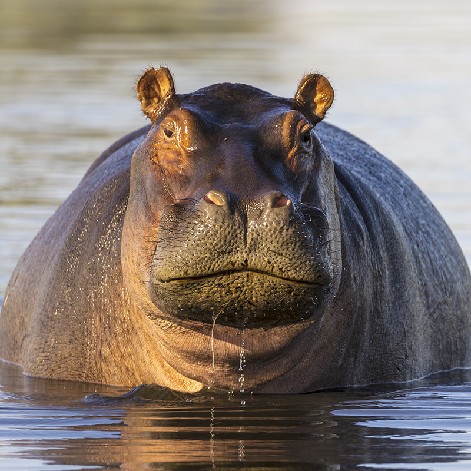

Giraffe

The giraffe's chief distinguishing characteristics are its extremely long neck and legs, its horn-like ossicones, and its spotted coat patterns. It is classified under the family Giraffidae, along with its closest extant relative, the okapi. Its scattered range extends from Chad.
Zebra
Zebras are primarily grazers and can subsist on lower-quality vegetation. They are preyed on mainly by lions and typically flee when threatened but also bite and kick. Zebras inhabit eastern and southern Africa and can be found in a variety of habitats such as savannahs.
Elephant
Elephants are the largest existing land animals. Three living species are currently recognised: the African bush elephant, the African forest elephant, and the Asian elephant. Elephants are scattered throughout sub-Saharan Africa, South Asia, and Southeast Asia.
Hippo
Hippos inhabit rivers, lakes, and mangrove swamps. Territorial bulls each preside over a stretch of water and a group of five to thirty cows and calves. Mating and birth both occur in the water. During the day, hippos remain cool by staying in water or mud, emerging at dusk to graze on grasses. the hippopotamus is the largest land mammal.
Cheetah
The cheetah lives in three main social groups: females and their cubs, male "coalitions", and solitary males. While females lead a nomadic life searching for prey in large home ranges, males are more sedentary and instead establish much smaller territories in areas with plentiful prey and access to females.The cheetah is active during the day.